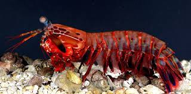
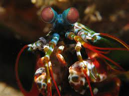

Fatos sobre o Stomatopoda
| Reino: | Animalia |
| Filo: | Arthropoda |
| Subfilo: | Crustacea |
| Classe: | Malacostraca |
| Subclasse: | Hoplocarida |
| Ordem: | Stomatopoda |
Olhos Complexos
Os crustáceos estomatópodes (Odontodactylus scyllarus ) possuem um sistema visual incrivelmente complexo, composto por olhos compostos que contêm mais tipos de fotorreceptores do que em qualquer outro animal conhecido. O arsenal óptico do olho do camarão mantis inclui capacidade de localização monocular, visão colorida de 12 canais, detecção de polarização linear de 2 canais e, em algumas espécies, a capacidade de detectar e analisar luz polarizada circularmente. Subjacente a este conjunto incomparável de capacidades funcionais está uma diversificação estrutural de uma unidade fotorreceptiva básica comum a todos os olhos compostos, o omatídio. A seguir, as proezas visuais do camarão mantis são descritas no contexto das variações do design e da distribuição de seus omatídios.
Camarões Mantismostra o olho do louva-a-deus de cauda escamosa, Lysiosquilla scabricauda. É composto por hemisférios superior e inferior (dorsal e ventral) separados por uma estreita faixa central. Um exame atento da superfície do olho revela que cada região consiste em fileiras paralelas de facetas minúsculas nos hemisférios e muito maiores na faixa. Os hemisférios têm muitas fileiras de facetas, mas a banda tem apenas seis. Olhar abaixo da superfície revela que cada faceta é a ponta de uma unidade estrutural alongada, conhecida como omatídio. Todos os omatídios são dispositivos opticamente sensíveis, mas aqueles na banda são os mais complexos, mais funcionais e mais interessantes.
Camarão Mantis é um perfurador e esmagador!
As maiores esmagadoras, tais como exemplares de Odontodactylus scyllarus, são capazes de desferir um dos mais rápidos e violentos golpes do reino animal, um soco que pode apresentar a velocidade de um tiro calibre .22 (equivalente a 720km/h) e uma força de impacto de 60 kg/cm².[3] Essa força esmagadora é a responsável pelo seu título de "lagosta-boxeadora" e é capaz de facilmente quebrar a carapaça de um caranguejo, as conchas duras e calcificadas de gastrópodes ou até mesmo quebrar o vidro reforçado de um aquário.[4][5] Estomatópodes podem ser encontrados em quase todo o litoral brasileiro, mas não são animais fáceis de se observar pelos seus hábitos mais furtivos. Devem ser manuseados com muita cautela pois são animais preparados para se defender com força, caso sejam incomodados.

O animal mais rápido no gatilho
O animal mais rápido no gatilho Além da enorme potência de seu soco, esse animal consegue movimentar seus apêndices tal qual um tiro de arma de fogo: seu golpe pode chegar a uma velocidade 720 km/h. Curiosamente, tanto a força quanto rapidez do ataque, não danificam sua estrutura corporal.
